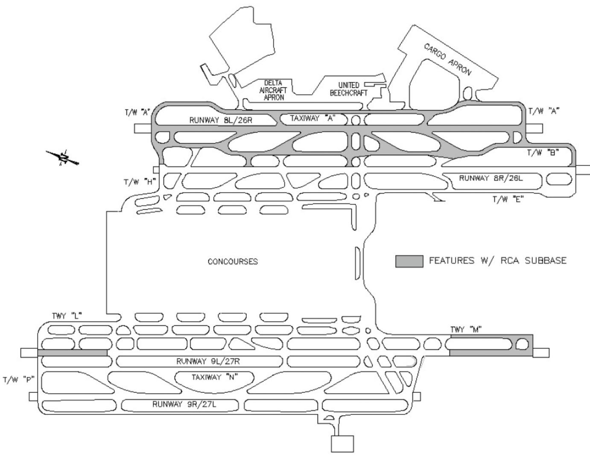
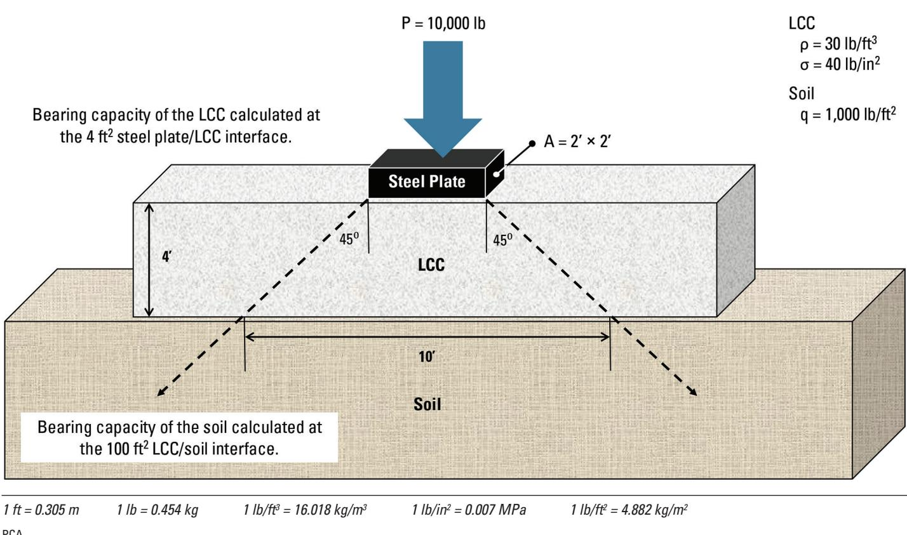

Cement-Stabilized Subgrade Composition
Cement‑stabilized subgrade (also termed cement‑stabilized base or lean concrete base) is a bound composite layer created by blending existing soil or granular aggregate—often recycled concrete aggregate (RCA)—with a modest amount of cement and water, optionally supplemented with lime, fly ash, or Portland cement, to form a cohesive, load‑bearing foundation beneath pavement [4][5]. The mix is limited to coarse gradations (no more than about 35 % passing the #200 sieve, profile index ≤10, and maximum particle size roughly ¾–1 in) so that hydrated cement paste coats or embeds the angular RCA particles, locking in fines and preventing calcium‑hydroxide migration while the granular skeleton supplies bulk stiffness and durability [2][3][6]. By selecting a lean cement dosage aimed at a target unconfined compressive strength, the resulting material exhibits increased strength, modulus, and resistance to deterioration compared with untreated fill, and its performance is routinely verified through unit‑weight and compressive‑strength testing [2][7].
CP Tech Center Guides reports covering “Cement-Stabilized Subgrade Composition” also include the following subtopics: Cement-Stabilized Subgrade Strength Enhancement.
Cement-Stabilized Subgrade Composition incorporates Cement-Stabilized Subgrade Strength Enhancement as a specialized method for improving fine-grained subgrades by blending Portland cement with clays or silts to lower the Plastic Index and raise unconfined compressive strength. [1][8] The enhancement process supplies the chemical binding mechanisms that reduce moisture sensitivity and shrink-swell potential within the broader composite layer. [6][9]
Sources (9)
Sub-concepts (1)
Material purpose and applicability
The cement‑stabilized subgrade, also termed a cement‑stabilized base or lean concrete base, is a bound composite layer created either by coating or embedding recycled concrete aggregate (RCA) in fresh cement paste or mortar, or by blending RCA with cementitious binders such as lime, fly ash, or Portland cement. Adding these binders raises the material’s strength and yields a cohesive, load‑bearing layer that serves as the foundation beneath the pavement structure. This stabilized layer serves as a durable, load‑bearing foundation in the pavement system and, by immobilizing the RCA, it prevents migration of crusher fines and the dissolution and transport of calcium hydroxide that could otherwise impair drainage. [4][5]
The practical application of this composition is illustrated in the figure below.

Airfield pavement layout at Hartsfield-Jackson Atlanta Airport showing features with RCA base [4]The figure displays a schematic map of the airfield, identifying specific zones such as runways and taxiways that are shaded to indicate they utilize an RCA subbase. This layout illustrates the application of cement-stabilized subgrade by showing where recycled concrete aggregate is integrated into the pavement structure at a major airport facility.
[4] — Ch. 4 (p. 49); [5] — Ch. 6 (pp. 83–84)
Cement‑stabilized subgrade is appropriate when the layer being constructed is a cement‑treated base made from granular material that falls in AASHTO Soil Classification Groups A‑1, A‑2‑4, A‑2‑5 or A‑3; it can also be used with A‑4 and A‑5 soils provided the location is free of frost and traffic is not dominated by large volumes of heavy trucks. In frost‑prone regions or where heavy truck loads are expected, these latter soil groups should be avoided, and in any case soils classified as A‑6 or A‑7 are unsuitable for cement‑treated bases, requiring an alternative material. [2]
[2] — Ch. 8 (p. 226)
Composition and characteristics
The material is produced by blending the existing soil or granular aggregate with a modest amount of cement and sufficient water to initiate hydration. The soil component may be natural granular soils classified in AASHTO groups A‑1, A‑2‑4, A‑2‑5, or A‑3, or it can consist of recycled concrete aggregate (RCA). In all cases the blend is limited to a low fines content—no more than about 35 % passing the #200 sieve—and the particles are sized no larger than one inch (preferably three‑quarters of an inch), giving a profile index of ten or less. Cement is added at a dosage lower than that used for normal concrete and is selected to meet a target strength; when additional cementitious binders such as lime, fly ash, or Portland cement are incorporated the mix evolves into a lean‑concrete base with higher strength. For RCA‑based mixes the fresh cement paste or mortar coats or embeds the angular, rough‑textured aggregate particles, locking in crusher fines and limiting calcium‑hydroxide migration; the absorption capacity of the RCA must be accounted for in the design. The resulting composite forms a dense, low‑fines base where the hydrated cement binds soil or aggregate particles into a cohesive matrix while the remaining granular material provides bulk and load‑bearing capacity, delivering increased strength, stiffness and durability compared with untreated fill. [2][3][4][5][6]
The figure below illustrates the recycled concrete aggregates used in this composition.
 Recycled concrete aggregates [3]
Recycled concrete aggregates [3]
The image displays a close-up view of numerous irregular, angular stones with rough surfaces and varying shades of gray.
[2] — Ch. 8 (p. 226); [3] — Solution (p. 66); [4] — Ch. 4 (p. 49); [5] — Ch. 6 (pp. 83–84); [6] — Ch. 4 (p. 35)
The composition, source, processing, and proportioning of the constituents directly influence the mechanical behavior of cement‑stabilized subgrade. “RCA typically contains some unhydrated cement that, when exposed to moisture in compacted bases and subbases, can hydrate to produce base/ subbase materials with increased stiffness and other improved properties when compared with those of virgin aggregates.” The benefit varies with the proportion of coarse versus fine fractions and with processing; “Using RCA fines in stabilized base applications has no negative impact on its physical or chemical properties.” Across sources, “Granular materials in AASHTO Soil Classification Groups A-1, A-2-4, A-2-5, and A-3 are used for cement-treated bases.” These aggregates must meet gradation limits: “They contain not more than 35 percent passing the #200 sieve, have a profile index (PI) of 10 or less” and “the maximum size of material is usually limited to 1 in. and preferably to ¾ in.” Cement dosage is lower than that for normal concrete; “Cement content is less than what is used for normal concrete and is selected based on the target strength.” Raising the binder proportion yields a stronger mix: “When the cementitious content is increased, a stronger material called lean concrete base (LCB) is easily produced.” When an asphaltic binder is employed, RCA absorption can be problematic: “the effect of absorption can be problematic, not from a moisture control issue but as an economic issue since there will be an increased demand for asphaltic binder due to the absorption of the RCA.” [2][5]
The relationship between aggregate characteristics and binder requirements is illustrated in the following figure.
 Reduction of cementitious content with increasing coarse aggregate size (based on ACI 211) [5]
Reduction of cementitious content with increasing coarse aggregate size (based on ACI 211) [5]
The figure displays a bar chart illustrating the relationship between Coarse Aggregate Nominal Maximum Size and Cementitious Content.
[2] — Ch. 2 (p. 38), Ch. 8 (p. 226); [5] — Ch. 6 (pp. 83–84)
Key material properties
The performance of cement‑stabilized subgrade is governed by a suite of physical, mechanical, chemical and (where noted) thermal attributes. Physically, the aggregate gradation must be coarse enough that no more than about 35 % passes the #200 sieve, the overall texture should have a profile index of ten or less, and the largest particles are limited to ¾‑inch (preferably) up to 1 inch to permit proper compaction. The high angularity and rough surface texture of recycled concrete aggregate further enhances interlock, while its absorption capacity influences mix water demand. Mechanical performance is linked to cement dosage selected for a target strength; the resulting hardened layer is evaluated by unit weight, unconfined compressive strength, stiffness (modulus of elasticity), bearing capacity and durability. Air content, permeability and sorption capacity are additional physical‑mechanical factors considered when required. Chemically, stability is achieved by coating or embedding the RCA in fresh cement paste, which limits dissolution and migration of calcium hydroxide that could precipitate as calcium carbonate; the inherent chemical characteristics of the aggregate are preserved, and incorporation of RCA fines does not adversely affect these properties. Thermal attributes are not specifically highlighted as performance drivers in the guidance. [2][4][5][7]
[2] — Ch. 8 (p. 226); [4] — Ch. 4 (p. 49); [5] — Ch. 6 (pp. 83–84); [7] — Ch. 2 (p. 22)
The properties of cement‑stabilized subgrade are characterized primarily through the AASHTO soil classification system, which groups suitable granular materials into categories such as A‑1, A‑2‑4, A‑2‑5, and A‑3. Within these groups the gradation is limited to no more than 35 % passing the #200 sieve and a profile index of ten or less, while the aggregate size is typically capped at one inch and preferably three‑quarters of an inch to ensure accurate grading and consistent performance. The most common hardened properties are unit weight and unconfined compressive strength, which should be measured on every job to verify that the composite meets design criteria. Additional characteristics such as air content, permeability, sorption capacity, or modulus of elasticity may also be determined, but only when specifically requested by the design engineer. [2][7]
[2] — Ch. 8 (p. 226); [7] — Ch. 2 (p. 22)
Behavior and mechanisms
When reclaimed concrete aggregate is used in a cement‑stabilized subgrade, the unhydrated cement it contains reacts with moisture that penetrates the compacted base or subbase; this hydration increases the stiffness of the material and yields other improved mechanical properties compared with virgin aggregates. The source does not provide information on how such a composition responds to loading, temperature variations, chemical exposure, or other service conditions. [2]
[2] — Ch. 2 (p. 38)
The behavior of cement‑stabilized subgrade is controlled by intertwined physical, chemical and mechanical mechanisms. Physically, the mix relies on “the physical skeleton formed by the aggregate particles” and on careful gradation; limiting “maximum particle size to one inch (preferably three‑quarters inch)” together with the “high angularity and rough surface texture of RCA makes it an exceptional base material” creates a dense interlock. The “physical and mechanical properties of RCA (particularly the absorption characteristics) must be considered,” because absorption can reduce binder availability, as noted by “the effect of absorption can be problematic, not from a moisture control issue but as an economic issue since there will be an increased demand for asphaltic binder due to the absorption of the RCA.” Chemically, any residual cement in recycled concrete aggregate undergoes “a chemical hydration reaction of residual unhydrated cement when moisture is present,” generating additional binding. Uncontrolled dissolution of calcium hydroxide can lead to carbonate formation, but “Coating or embedding the RCA in fresh cement paste or mortar prevents the migration of crusher fines and the dissolution and transport of significant amounts of calcium hydroxide” that would otherwise “form calcium carbonate precipitate in drain pipes.” Mechanically, strength develops through “mechanical stiffening that results from compaction of the moist mix,” and the presence of cementitious binders allows “When the cementitious content is increased, a stronger material called lean concrete base (LCB) is easily produced.” The combined effect of these mechanisms dictates stiffness, durability, and load‑bearing capacity. [2][4][5]
[2] — Ch. 2 (p. 38), Ch. 8 (p. 226); [4] — Ch. 4 (p. 49); [5] — Ch. 6 (pp. 83–84)
Durability and deterioration
Durability of cement‑stabilized subgrade that incorporates recycled concrete aggregate is compromised if calcium hydroxide leaches from the fresh paste and migrates through the layer, because it can later precipitate as calcium carbonate in drainage systems. Likewise, uncoated RCA allows crusher fines to move within the mix, which can weaken the composite and promote further degradation. The high absorption capacity of RCA also demands careful control of moisture content during design and production, since excessive water uptake can affect strength development and long‑term performance. [4]
The figure below illustrates the typical pH range associated with recycled concrete aggregate leachate and runoff.
 A pH scale illustrating the alkaline range of RCA leachate relative to natural stream water and common substances. [4]
A pH scale illustrating the alkaline range of RCA leachate relative to natural stream water and common substances. [4]
The figure displays a vertical pH scale ranging from acidic battery acid at the top to alkaline lye at the bottom, with specific ranges for milk, baking soda, and sea water marked along the axis. High-pH runoff results primarily from dissolution of exposed calcium hydroxide, a byproduct of the hydration of cement. This alkaline leachate can negatively impact receiving natural waters and vegetation until diluted with rainfall.
[4] — Ch. 4 (p. 49)
The guides agree that durability of cement‑stabilized subgrades depends first on the inherent characteristics of the granular soil or aggregate used. Granular materials classified in AASHTO Groups A‑1, A‑2‑4, A‑2‑5 and A‑3, with no more than about one‑third passing the #200 sieve and a profile index of ten or less, provide the most resistant base. Limiting the maximum aggregate size to ¾–1 in further reduces susceptibility. Soils that are coarser or have higher profile indices—such as Groups A‑4 or A‑5—are acceptable only in non‑frost environments and where heavy truck traffic is limited; in frost zones or under large traffic volumes they increase the risk of deterioration. The guides uniformly advise avoiding soils classified as A‑6 or A‑7 because their fine‑grained nature makes rapid degradation likely. When recycled concrete aggregate (RCA) is incorporated, susceptibility is governed by its absorption capacity and exposure to leaching. High‑absorption RCA permits greater water ingress, which promotes dissolution of calcium hydroxide and subsequent carbonate precipitation that can weaken the matrix. Conversely, low‑absorption or RCA that has been sealed with a fresh cement paste or mortar coating limits water migration and calcium‑hydroxide leaching, thereby reducing deterioration risk. [2][4]
[2] — Ch. 8 (p. 226); [4] — Ch. 4 (p. 49)
Material interactions and compatibility
The guides describe several interacting mechanisms that govern cement‑stabilized subgrade performance. Adding a small amount of cement to the soil produces a cement‑modified subgrade in which the cement reacts with the soil particles and moisture, binding them into a composite material that gains improved mechanical strength and stability. When a cement‑stabilized base is built with recycled concrete aggregate (RCA), the fresh cement paste or mortar coats the RCA particles, which blocks the movement of crusher fines and stops calcium hydroxide from dissolving and being carried away; this protects downstream drainage. Because RCA absorbs water readily, its absorption capacity must be accounted for in mix design to ensure enough paste is provided for proper bonding and strength development. When cementitious binders such as lime‑fly‑ash mixtures or Portland cement are added to recycled concrete aggregate (RCA), the high angularity and rough surface of the aggregate promote strong mechanical interlock and chemical bonding, producing a lean concrete base that gains strength as the binder content rises. Incorporating RCA fines does not degrade the physical or chemical behavior of the stabilized mix, allowing full utilization of the material. If an asphaltic binder is used instead, the porous nature of RCA leads to significant absorption, which raises the amount of binder required and leaves less binder available to enhance the base’s structural properties. [3][4][5]
The following figure illustrates a typical off-site concrete pavement recycling operation that utilizes these principles.
 Mobile concrete pavement recycling operation producing recycled concrete aggregate (RCA) [4]
Mobile concrete pavement recycling operation producing recycled concrete aggregate (RCA) [4]
The image displays a mobile crushing plant processing concrete slabs into smaller pieces, which is the primary method for generating recycled concrete aggregate (RCA).
[3] — Solution (p. 66); [4] — Ch. 4 (p. 49); [5] — Ch. 6 (pp. 83–84)
Influence of production and placement
The most critical construction‑related defect in cement‑stabilized subgrade is failing to properly coat or embed the recycled concrete aggregate (RCA) in fresh cement paste; without this barrier, crusher fines and dissolved calcium hydroxide can migrate through the mix and later precipitate as calcium carbonate in drainage pipes, undermining long‑term durability. Equally important, neglecting the absorption characteristics of RCA during mix design leads to moisture imbalances that reduce strength development and compromise the stability of the stabilized base. [4]
[4] — Ch. 4 (p. 49)
Selection, specification, and improvement
The criteria that guide material selection or specification for cement‑stabilized subgrade are drawn from soil classification limits, recycled aggregate characteristics, required hardened properties, and performance targets. The guides require that “Granular materials in AASHTO Soil Classification Groups A‑1, A‑2‑4, A‑2‑5, and A‑3 are used for cement-treated bases.” Acceptable gradation is defined by “They contain not more than 35 percent passing the #200 sieve, have a profile index (PI) of 10 or less” and “the maximum size of material is usually limited to 1 in. and preferably to ¾ in.” In non‑frost regions “Cement‑treated bases have been built with A‑4 and A‑5 soils in some nonfrost areas … Use of A‑6 and A‑7 soils is not recommended.” When recycled concrete aggregate (RCA) is employed, “The physical and mechanical properties of RCA (particularly the absorption characteristics) must be considered in the design and production of LCB and CSB materials” and to protect downstream drainage “Coating or embedding the RCA in fresh cement paste or mortar prevents the migration of crusher fines and the dissolution and transport of significant amounts of calcium hydroxide.” The stabilizing binder may be adjusted: “RCA is easily stabilized as a base material by adding cementitious binders (such as lime and fly ash (LFATB) or portland cement (CTB))” and “When the cementitious content is increased, a stronger material called lean concrete base (LCB) is easily produced.” Fine RCA particles are permissible because “Using RCA fines in stabilized base applications has no negative impact on its physical or chemical properties,” though “the effect of absorption can be problematic, not from a moisture control issue but as an economic issue since there will be an increased demand for asphaltic binder due to the absorption of the RCA.” Finally, performance specifications focus on hardened metrics: “The most common hardened properties are unit weight and unconfined compressive strength, which should be measured on every job.” Additional properties such as air content, permeability, sorption capacity, or modulus of elasticity may be included only when explicitly requested: “Most of the other hardened properties, such as air content, permeability, sorption, modulus of elasticity, and others, are typically not tested unless specifically requested by the design engineer.” These criteria collectively ensure that the selected composition meets structural capacity, durability, and constructability requirements. [2][4][5][7]
[2] — Ch. 8 (p. 226); [4] — Ch. 4 (p. 49); [5] — Ch. 6 (pp. 83–84); [7] — Ch. 2 (p. 22)
The performance of cement‑stabilized subgrade can be improved through several complementary strategies identified across the guides. Recycled aggregates are encouraged: “Incorporating recycled aggregates such as reclaimed concrete aggregate (RCA), coarse fractionated reclaimed asphalt pavement (FRAP) or air‑cooled blast furnace slag (ACBFS) into a cement‑stabilized subgrade can boost stiffness and other mechanical properties while reducing reliance on virgin material.” The inherent residual cement in RCA further contributes to strength, as “RCAs typically contains some unhydrated cement that, when exposed to moisture in compacted bases and subbases, can hydrate to produce base/ subbase materials with increased stiffness and other improved properties when compared with those of virgin aggregates.” Proper selection of granular base material is also required: “Granular materials in AASHTO Soil Classification Groups A-1, A-2-4, A-2-5, and A-3 are used for cement‑treated bases,” and they “contain not more than 35 percent passing the #200 sieve, have a profile index (PI) of 10 or less.” Soils classified as A‑6 and A‑7 should be avoided: “Use of A-6 and A-7 soils is not recommended.”
A modest cement addition to native soil creates a cement‑modified soil that enhances load‑bearing capacity: “Add a small amount of cement to the soil to create a cement-modified soil.” Additional binders further raise performance: “adding cementitious binders (such as lime and fly ash (LFATB) or portland cement (CTB))” and “When the cementitious content is increased, a stronger material called lean concrete base (LCB) is easily produced.” The fine fraction of RCA can be retained without adverse effects: “Using RCA fines in stabilized base applications has no negative impact on its physical or chemical properties.”
To address weaknesses specific to recycled concrete aggregate, coating or fully embedding the particles in fresh paste is recommended: “Coating or embedding the RCA in fresh cement paste or mortar prevents the migration of crusher fines and the dissolution and transport of significant amounts of calcium hydroxide.” Design mixes must also account for the higher absorption of RCA: “The physical and mechanical properties of RCA (particularly the absorption characteristics) must be considered in the design and production of LCB and CSB materials.”
Finally, routine quality‑control focuses on hardened properties. The guides stress that “The most common hardened properties are unit weight and unconfined compressive strength, which should be measured on every job.” Additional properties such as air content, permeability, sorption, or modulus of elasticity may be evaluated when specified: “Most of the other hardened properties, such as air content, permeability, sorption, modulus of elasticity, and others, are typically not tested unless specifically requested by the design engineer.” These measurements provide the basis for assessing service life: “The hardened properties of LCC are the properties that the engineering community uses for the service life of the project.” [2][3][4][5][7]
The figure below illustrates how these hardened properties influence bearing capacity and the spread of compressive forces in LCC.

Diagram illustrating the bearing capacity and spread of compressive forces in a Lean Concrete Cushion (LCC) layer. [7]The figure depicts a structural analysis where a load is applied to a steel plate resting on an LCC block, with dashed lines indicating that the force spreads at a 45-degree angle through the material depth.
[2] — Ch. 2 (p. 38), Ch. 8 (p. 226); [3] — Solution (p. 66); [4] — Ch. 4 (p. 49); [5] — Ch. 6 (pp. 83–84); [7] — Ch. 2 (p. 22)
Performance evaluation and implications
The primary laboratory and field evidence used to assess a cement‑stabilized subgrade is its hardened unit weight and unconfined compressive strength, which are required to be measured on every job. These two properties represent the final product’s ability to support loads and remain stable over the service life. Additional hardened characteristics such as air content, permeability, sorption, or modulus of elasticity are only evaluated when specifically called for by the design engineer. [7]
[7] — Ch. 2 (p. 22)
The performance and durability of cement‑stabilized subgrades are governed by the interaction of soil type, aggregate characteristics, cement content, and the resulting hardened properties. Across sources, granular soils classified in AASHTO groups A‑1 through A‑3 are identified as suitable for cement‑treated bases, while coarser or weaker groups (A‑4, A‑5) may be used only where frost is absent and traffic loads are moderate. Designers limit aggregate size to about one inch and select a lean cement dosage that achieves the target strength without reaching conventional concrete levels, which influences both handling during construction and long‑term stiffness of the layer. When recycled concrete aggregate (RCA) is incorporated, its high angularity and rough surface texture contribute to an exceptionally strong, stable base, and the mix can include all RCA fines without degrading physical or chemical properties. Because RCA’s absorption capacity affects moisture balance, designers must account for its physical and mechanical traits; coating or embedding the RCA in fresh cement paste prevents the migration of crusher fines and calcium hydroxide, protecting drainage systems and sustaining durability. The engineered performance is ultimately evaluated through hardened metrics—unit weight and unconfined compressive strength are measured on every job to verify that the subgrade can sustain service loads, guide thickness design, and provide quality‑control checkpoints that reduce future maintenance. [2][4][5][7]
[2] — Ch. 8 (p. 226); [4] — Ch. 4 (p. 49); [5] — Ch. 6 (pp. 83–84); [7] — Ch. 2 (p. 22)
Related Concepts
References
- J. Weiss, M. T. Ley, L. Sutter, D. Harrington, J. Gross, and S. L. Tritsch, "Guide to the Prevention and Restoration of Early Joint Deterioration in Concrete Pavements," National Concrete Pavement Technology Center Iowa State University, Rep. InTrans Project 15-555; TR-697, 2016. [Online]. Available: https://www.cptechcenter.org/wp-content/uploads/2018/03/2016_joint_deterioration_in_pvmts_guide.pdf
- P. Taylor, T. Van Dam, L. Sutter, and G. Fick, "Integrated Materials and Construction Practices for Concrete Pavement: A State-of-the-Practice Manual," National Concrete Pavement Technology Center, Rep. Part of InTrans Project 13-482; TPF-5(286), 2019. [Online]. Available: https://www.cptechcenter.org/wp-content/uploads/2019/12/IMCP_manual.pdf
- S. Garber, R. O. Rasmussen, and D. Harrington, "Guide to Cement-Based Integrated Pavement Solutions," Institute for Transportation, Iowa State University, 2011. [Online]. Available: https://www.cptechcenter.org/wp-content/uploads/2018/08/IPS.pdf
- M. B. Snyder, T. L. Cavalline, G. Fick, P. Taylor, and J. Gross, "Recycling Concrete Pavement Materials: A Practitioner’s Reference Guide," National Concrete Pavement Technology Center, 2018. [Online]. Available: https://www.cptechcenter.org/wp-content/uploads/2018/09/RCA_practioner_guide_w_cvr.pdf
- T. Van Dam, P. Taylor, G. Fick, D. Gress, M. Van Geem, and E. Lorenz, "Sustainable Concrete Pavements: A Manual of Practice," National Concrete Pavement Technology Center, 2011. [Online]. Available: https://www.cptechcenter.org/wp-content/uploads/2018/03/Sustainable_Concrete_Pavement_508.pdf
- J. Gross and W. Adaska, "Guide to Cement-Stabilized Subgrade Soils," National Concrete Pavement Technology Center, Iowa State University, Rep. PCA Special Report SR1007P, 2020. [Online]. Available: https://www.cptechcenter.org/wp-content/uploads/2020/05/guide_to_CSS.pdf
- S. M. Taylor and G. E. Halsted, "Guide to Lightweight Cellular Concrete for Geotechnical Applications," National Concrete Pavement Technology Center, Iowa State University, Rep. PCA Special Report SR1008P, 2021. [Online]. Available: https://www.cptechcenter.org/wp-content/uploads/2021/01/guide_to_LCC_for_geotech_apps.pdf
- J. Gross, D. Harrington, P. Wiegand, and T. Cackler, "Guidance for Improving Foundation Layers to Increase Pavement Performance on Local Roads," National Concrete Pavement Technology Center, Rep. IHRB Project TR-640; InTrans Project 11-422, 2014. [Online]. Available: https://www.cptechcenter.org/wp-content/uploads/2018/03/IHRB_TR-640_foundation_layers_guide.pdf
- G. D. Reeder, D. S. Harrington, M. E. Ayers, and W. Adaska, "Guide to Full-Depth Reclamation (FDR) with Cement," National Concrete Pavement Technology Center, Rep. SR1006P, 2017. [Online]. Available: https://www.cptechcenter.org/wp-content/uploads/2019/01/Guide_to_FDR_with_Cement_Jan_2019_reprint.pdf